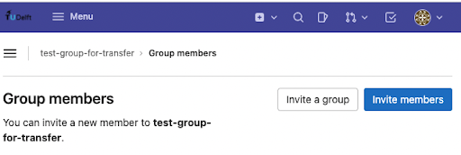
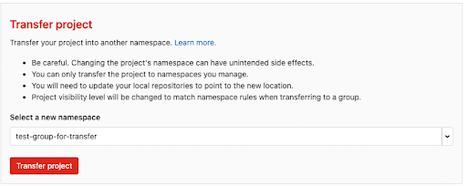

Transfer ownership of a GitLab repository#
Background#
GitLab repositories belonging to employees leaving the TU Delft might be deleted in future.
From the TU Delft GitLab help documentation, we read the following:
Current situation
First, if you use Git on your computer, you will have the entire history also locally on your machine. Without a valid TU Delft account, your GitLab access will become inactive. There are currently no plans to delete any content when an account becomes inactive.
Future situation
At some point in the future, repositories of former TU Delft employees may be deleted. To avoid losing information, it is recommended to transfer ownership of your repositories to a current TU Delft employee when you leave.
Purpose of this guide#
This guide provides the steps required to secure access to repositories of employees who will leave the TU Delft.
If they have access to your projects, they will still have access after you leave, as long as the projects still exist. You can control who has access to your projects by going to Project Information > Members in the sidebar of your repository. To be safe, transfer the ownership of the projects to a current TU Delft employee when you leave.
You can transfer a project to another user’s GitLab namespace. Read what a namespace is here.
Note
Providing a more straightforward way to transfer ownership in Gitlab was raised as an issue in 2016 but the issue is still open; you can follow the progress here if interested.
Steps#
The steps will guide you through transferring repository ownership between TU Delft employees through an intermediary GitLab group:

Note
Summary (based on this Stack Overflow post): Move your project from your namespace to a group where both you and the other user are owners, then the other user can transfer it to their own namespace
Step 1. Create a new group#
Create a new group if you don’t have one that you want to use (Menu > Groups > Create group)
Step 2. Invite members#
Make sure that both the maintainer of the project repository, and the person who it will be transferred to, are members of the group and have the Owner role (to add a new owner: go to the group namespace, then from the sidebar choose Group information > Members > Invite members.


Enter the username or email of the person you want to invite and change the role to ‘Owner’. Click ‘Invite’.)

Step 3. Transfer project to group#
Have a maintainer of the project repository transfer it to the group namespace (go to the project namespace, then from the sidebar go to Settings > General > Advanced > Transfer Project)

Step 4. Check email#
After doing this, the maintainer(s) of the project will get an email:

Step 5. Transfer project to user#
Now the person who the project is being transferred to can move it to their own namespace (go to the project namespace, then from the sidebar, go to Settings > General > Advanced > Transfer Project like before).
Step 6. Optional: remove group#
If desired, the group can be deleted after the transfer is complete (go to the group namespace, then from the sidebar go to Settings > General > Advanced > Remove Group)